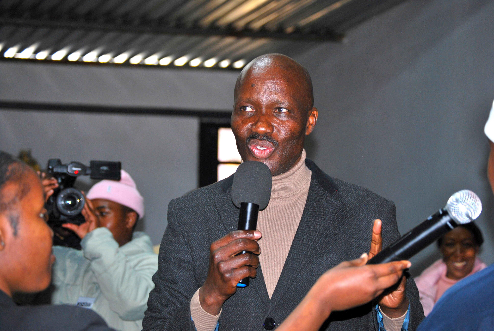

Who We Are
A prophetic apostolic ministry raised up to carry the Kingdom of God to every nation, every generation, every sphere.
Our Story
The Synagogues was founded on the vision of creating a Home of the Word — a place where every person, regardless of background, can encounter the living God and discover their God-given purpose.
We are a prophetic apostolic ministry that believes in the full expression of the Gospel — signs, wonders, miracles, and the transformative power of the Holy Spirit working through yielded vessels.
From our home base in Vereeniging, we have grown to multiple campuses and a global podcast audience, reaching thousands with the Word of God every week.
What We Stand For
Everything we do flows from a culture of prayer and intimacy with God. We are a house built on the foundation of seeking His face.
We are committed to the uncompromising, prophetic teaching of the Word of God as the ultimate authority in every area of life.
Every believer carries a specific assignment in God's Kingdom. We are dedicated to helping people discover, develop and deploy their God-given purpose.
We believe in doing life together. Iron sharpens iron — we are stronger, wiser and more impactful when we walk in genuine community.
The Great Commission drives us. We are a house built for all peoples — every tribe, tongue and nation is welcome at the table.
We create space for the Holy Spirit to move freely — in worship, in ministry, in our daily lives. We honour His presence above all else.

Leadership
Senior Pastor & Founder · The Synagogues
Apostle Glen Monama is a prophetic apostolic minister who carries a distinct mandate to raise up and release a generation of purpose-driven believers. His ministry is marked by clear prophetic insight, powerful teaching of the Word, and an unwavering commitment to seeing lives transformed by the power of the Gospel.
With a passion for prayer and intercession, Apostle Glen has built The Synagogues as a true house of prayer — a spiritual hub where believers come to encounter God, be equipped, and be sent out to fulfill their Kingdom assignments.
He is also the host of the "Words of Wisdom" podcast, which reaches listeners across South Africa and the world with practical, prophetic teaching from the Word of God.
What began as a small gathering of believers with a hunger for God has grown into a multi-campus ministry touching thousands of lives. The Synagogues was planted in Vereeniging with a simple yet profound mandate: to be a Home of the Word.
Over the years, God has faithfully grown the work — from our Vereeniging headquarters to our Pretoria East campus, from local meetings to a global podcast, from a handful of members to a thriving community of purpose-driven believers.
Every step of this journey has been marked by prayer, sacrifice, and an unshakeable trust in God's faithfulness. The best is still ahead.
What We Believe
We would love to meet you. Join us for a service or reach out — we're expecting you.